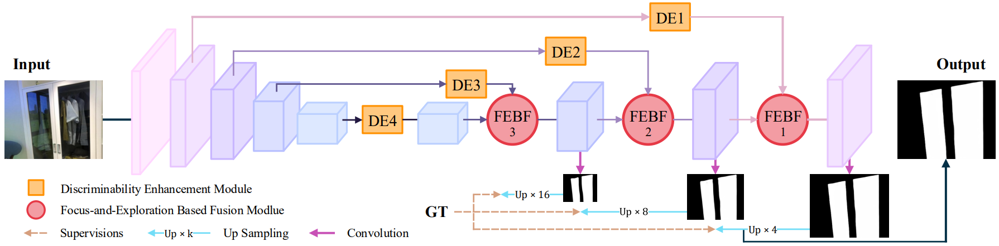

Progressive Glass Segmentation
Letian Yu1,*
Haiyang Mei1,*
Wen Dong1
Ziqi Wei2,†
Li Zhu1
Yuxin Wang1
Xin Yang1,†
1
Dalian University of Technology
2
Tsinghua University
|
|  |
Abstract
Glass is very common in the real world. Influenced by the uncertainty about the glass region and the varying complex scenes behind the glass, the existence of glass poses severe challenges to many computer vision tasks, making glass segmentation as an important computer vision task. Glass does not have its own visual appearances but only transmit/reflect the appearances of its surroundings, making it fundamentally different from other common objects. To address such a challenging task, existing methods typically explore and combine useful cues from different levels of features in the deep network. As there exists a characteristic gap between level-different features, i.e., deep layer features embed more high-level semantics and are better at locating the target objects while shallow layer features have larger spatial sizes and keep richer and more detailed low-level information, fusing these features naively thus would lead to a sub-optimal solution. In this paper, we approach the effective features fusion towards accurate glass segmentation in two steps. First, we attempt to bridge the characteristic gap between different levels of features by developing a Discriminability Enhancement (DE) module which enables level-specific features to be a more discriminative representation, alleviating the features incompatibility for fusion. Second, we design a Focus-and-Exploration Based Fusion (FEBF) module to richly excavate useful information in the fusion process by highlighting the common and exploring the difference between level-different features. Combining these two steps, we construct a Progressive Glass Segmentation Network (PGSNet) which uses multiple DE and FEBF modules to progressively aggregate features from high-level to low-level, implementing a coarse-to-fine glass segmentation. In addition, we build the first home-scene-oriented glass segmentation dataset for advancing household robot applications and in-depth research on this topic. Extensive experiments demonstrate that our method outperforms 26 cutting-edge models on three challenging datasets under four standard metrics.
Downloads
| HSO training set | : [ Google Drive ] [ Baidu Disk, fetch code: hsod ] |
| HSO testing set | : [ Google Drive ] [ Baidu Disk, fetch code: hsod ] |
| Code | : [ Github ] (under-construction) |
BibTex